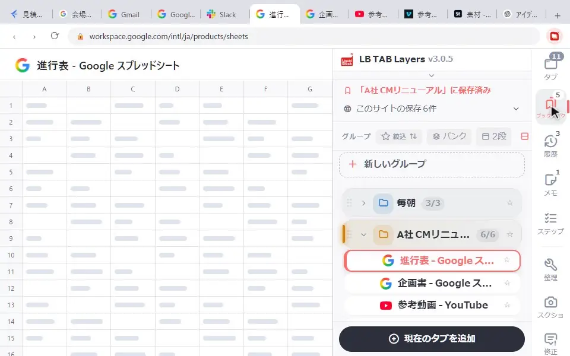

話が伝わらないのは、言葉の「上流」と「下流」が混ざっているからです。上流は、何のための話か・全体で何が起きているかという、全体を見渡す言葉。下流は、自分はどう考えるか・細かいところはどうかという、自分から見た言葉です。上流から下流へ並べ直すだけで、説明もメモも、フォルダの整理も分かりやすくなります。
💡 ブラウザも、上流から下流へ。 タブとブックマークを「案件 ＞ 工程 ＞ ページ」の順に並べ、ページの横にメモも残せる Chrome 拡張です。アカウント登録なし。 LB TAB Layers を Chrome に無料で追加 →
説明しているうちに、自分でも何の話をしているのか分からなくなる。報告したのに「で、結局どういうこと？」と聞き返される。頭の中にはあるのに、うまく出てこない。そんなとき、言葉の並べ方を見直すと、すっきりすることがあります。
言葉にも「上流」と「下流」がある
言葉には、階層があります。
- 上流（全体を見る言葉）：何のための話か。全体で、いま何が起きているか。
- 下流（自分から見た言葉）：自分はどう考えるか。細かいところはどうか。
話が伝わらないときは、たいていこの2つが混ざっています。目的を伝える前に、自分の感想から話し始めてしまう。全体の状況を言う前に、細かい事情を話してしまう。聞く人は、どの話がどこにつながるのか分からなくなります。
直し方は1つです。話す前に、「この言葉は上流か、下流か」を一度考えて、上流から順に並べる。それだけで、聞く人は全体の地図を持ったまま、細かい話を聞けます。
フォルダの整理と、わかりやすい説明は同じ
映像制作の現場では、フォルダやファイルの名前を、大きい単位から小さい単位へ並べています。
| 上流（全体） | → | 下流（細部） | |
|---|---|---|---|
| フォルダ | 案件 | 工程 | 日付 |
| ファイル名 | 作品名・カットナンバー | シーン名・効果 | 役目・バージョン |
| 話すこと | 何のための話か | いま何が起きているか | 自分はどう考えるか |
フォルダが散らかる人は、上流と下流が同じ階層に並んでいます。「A社」と「デザイン」と「11月分」が並んでいたり、「最終」「修正版」のように自分の気持ちが名前の先頭に来ていたり。話が伝わらない理由と、フォルダが散らかる理由は、根っこが同じだと私たちは考えています。
フォルダの型と名前の付け方は「フォルダ分けと命名規則の基準」にまとめています。
上流から話すための3つの問い
話す前、送る前に、3つを順に考えます。
1. 何のための話か
相談なのか、報告なのか、決めてほしいのか。最初の一言で、聞く人の構えが決まります。
2. 全体で、いま何が起きているか
自分の担当のことだけでなく、全体の中でどこの話かを先に言います。
3. 自分はどう考えるか
最後に、自分の考えや気持ちを言います。下流の言葉は、上流があってはじめて伝わります。
送る前の1分で、この順に並べ直すだけで、やり取りの往復が減ります。チャットで伝わらないときの直し方は「チャットで伝わらない・やり取りが増える人へ」にもまとめています。
頭の中の整理は、言葉を並べ直すこと
「頭の中を整理する」というと難しく聞こえます。でも、やることは、言葉を上流から下流へ並べ直すことです。並べ直せば、フォルダにもなり、メモにもなり、説明にもなります。
反対に、フォルダやメモを上流から下流の形で作っておくと、頭の中もその形で整っていきます。道具の形が、考え方の形になります。
ブラウザも、上流から下流へ
私たちが作っている Chrome 拡張「LB TAB Layers」は、この考え方をブラウザに持ち込んだ道具です。名前の「Layers」は階層のこと。
- 開いているタブとブックマークを、「案件（上流）＞ 工程（中流）＞ ページ（下流）」の形で並べられます（グループとサブグループ。無料版は2階層まで）。
- ページの横にメモを残せます。「なぜこのページを残したか」という下流の言葉を、上流の入れ物の中に置いておけます。
- 仕事を工程に分ける「ステップタスク」で、大きな仕事を小さな手順に分けて、1つずつ終わらせられます。

まとめ
- 言葉には、全体を見る言葉（上流）と、自分から見た言葉（下流）がある
- 話が伝わらないのは、上流と下流が混ざっているから
- 話す前に「何のための話か → 全体で何が起きているか → 自分はどう考えるか」の順に並べる
- フォルダの整理と、わかりやすい説明は、同じ考え方でできる
よくある質問
Q. 話が伝わらない原因は何ですか？
全体を見る言葉（上流）と、自分から見た言葉（下流）が混ざっていることが多いです。目的より先に感想を話すと、聞く人は話の地図を持てません。
Q. わかりやすく説明するコツは？
「何のための話か」「全体で何が起きているか」「自分はどう考えるか」の順に並べます。上流から下流へ、です。
Q. 頭の中を整理するにはどうすればいいですか？
言葉を上流から下流へ並べ直します。フォルダやメモをその形で作っておくと、考え方もその形で整っていきます。
▶ 実際の操作を動画で見る
サイドバーで、ブックマークとタブをいっしょに管理する様子です。